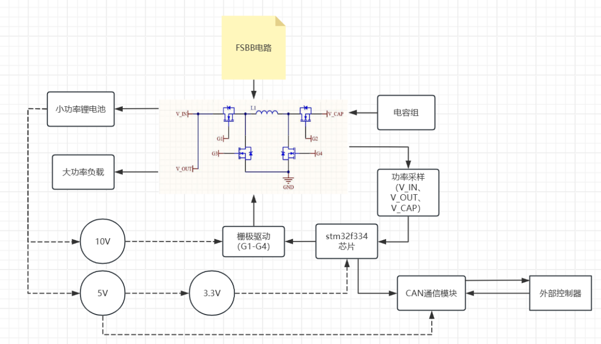
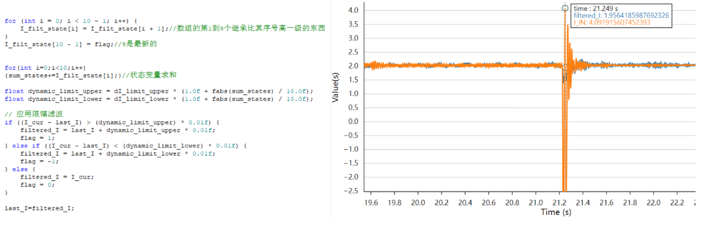

基于 FSBB 的尖峰补能系统
针对小功率电池在驱动大功率尖峰负载时因大电流放电与低压降额导致的设备失稳与电池寿命折损问题， 本项目提出并实现了一套基于四开关 Buck-Boost（FSBB）拓扑与超级电容的智能尖峰补能系统。 系统以 FSBB + 超级电容构成能量缓冲"弹性枢纽"，通过"锂电池功率外环 — 超级电容电压约束环 — 电容电流内环"的 三环并联增量式 PID 协同控制策略，实现双源功率的实时分配与平滑调制； 并引入高速比较器与双向功率 MOSFET 的硬件加速切换机制，降低突变工况下的切换延迟与反灌风险。
1 引言
小型机器人、无人机、电动工具等小功率平台常呈现"平均功率不高但瞬时尖峰功率突升"的负载特征 （如电机启动/堵转、云台补偿、脉冲工具负载等）。传统单一锂电池直供方案在尖峰负载下 易因电池内阻与倍率限制导致端电压塌陷，引发系统重启或性能降级；同时大电流脉冲放电 会加速电池老化，降低循环寿命。为兼顾"尖峰供电稳定性"和"电池寿命保护"， 本项目提出基于 FSBB 与超级电容的混合储能尖峰补能系统， 通过智能能量管理实现负载尖峰"削峰填谷"。
2 系统总体设计与硬件实现
2.1 模块化架构
系统采用模块化设计，分为电池模块、尖峰补能模块（FSBB + 超级电容）与控制模块三部分。 各模块通过标准化接口连接（XT30 电源接口、GH1.25 通信接口），支持热插拔与并联扩展。 整体能量流为：锂电池提供基础能量，超级电容承担尖峰功率，FSBB 负责双向能量调度与升降压匹配。

2.2 FSBB 拓扑与双向 DCDC 模块
尖峰补能模块核心为四开关 Buck-Boost（FSBB）双向变换器，能够在输入电压（电池侧）高于、等于或低于 输出电压（负载/电容侧）时高效工作，并支持能量双向流动。结合超级电容组后， 系统形成"能量缓冲与调节的弹性枢纽"，从结构层面为尖峰功率补偿提供硬件基础。


3 三环并联增量式 PID 协同控制
3.1 双源功率分配机理
在等效拓扑中，可将"DCDC + 电容组"视作可控电压源 Vcap，锂电池视作电压源 Vbat。 由基尔霍夫方程组可得到锂电池功率对 Vcap 的敏感度——即在给定内阻条件下， 提高可控电压源 Vcap 将降低锂电池功率输出，从而实现对锂电池尖峰应力的"可控削峰"。 因此只要通过闭环控制精准调节 Vcap，即可在尖峰工况下将更多瞬态功率转移到超级电容侧承担。
3.2 三环控制结构
为同时满足"电池安全功率约束"与"超级电容 SOC 边界约束"，系统提出三环并联协同控制结构：
- 外环：锂电池功率环（全局功率上限约束）
- 约束环：超级电容高压/低压电压环（SOC 边界）
- 内环：电容电流环（快速执行）
控制器通过 MIN/MAX 选择器融合功率与电压两类约束，实时生成安全的目标电流， 最终调节 DCDC 的广义占空比，实现双源能量协同调度与平滑过渡。

3.3 选择增量式 PID 的原因
电源领域常见反馈控制方案包括运放补偿网络、位置式 PID 与模型预测控制（MPC）等， 但在本系统"资源受限 + 快速突变响应"的场景中存在调参困难、积分饱和或算力开销过高等问题。 增量式 PID 的输出为控制量增量，计算量小、对积分饱和不敏感， 适用于 STM32 平台，可在保证精度的同时获得毫秒级动态响应。
4 毫秒级响应高速供电切换
4.1 硬件加速切换架构
系统采用"STM32 + 高速比较器"协同架构：STM32 负责上层状态机、能量管理策略与参数更新； 高速比较器实时监控关键节点阈值。当检测到突变信号时，比较器可纳秒级触发硬件中断或 直接驱动切换控制逻辑，绕开纯软件判断延迟，实现硬件级快速响应。
4.2 防反灌保护
切换模块核心采用双向功率 MOSFET 阵列，配合同步整流降低导通损耗； 同时引入理想二极管控制与软启动逻辑抑制切换瞬间的电压尖峰与反向电流倒灌， 保护锂电池与超级电容安全。

5 趋势感知动态限幅滤波与负载识别
户外复杂工况下，电流采样信号常呈现"噪声与真实突变叠加"的特点。 传统固定参数低通滤波虽可抑制噪声，但易引入相位滞后，削弱对尖峰的快速跟踪能力。
系统采用趋势感知的动态限幅滤波：通过历史状态累积判断电流变化趋势， 当趋势平缓时收紧限幅窗口（强滤噪），当趋势陡变时放宽窗口（快跟踪）， 实现滤噪与动态响应的自适应平衡。
6 PCB 设计
本人在项目中负责部分 PCB 设计与硬件调试工作。FSBB 主板基于 STM32F334 芯片（高分辨率定时器）， 四层板设计，集成 FSBB 功率级、栅极驱动、电流/电压采样、CAN 通信等功能。

7 项目成果
- 完成 FSBB + 超级电容混合储能硬件平台设计与制作
- 实现三环并联增量式 PID 协同控制算法
- 设计高速比较器 + 双向 MOSFET 硬件加速切换机制
- 提出趋势感知动态限幅滤波方法
- 模块化架构支持热插拔与并联扩展
- 项目以市级良好等级结题（2025.12）